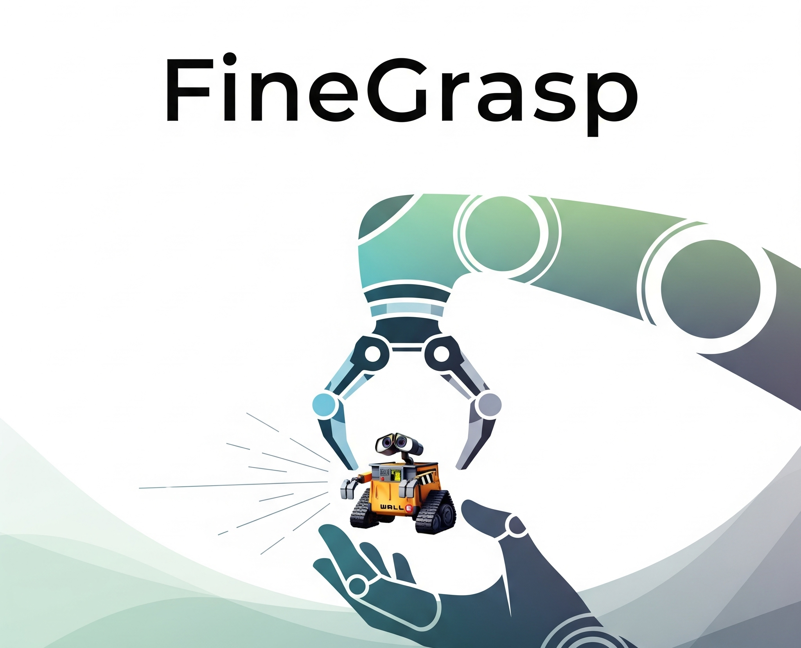
* Equal contribution
Recent advancements in robotic grasping have led to its integration as a core module in many manipulation systems. For instance, language-driven semantic segmentation enables the grasping of any designated object or object part. However, existing methods often struggle to generate feasible grasp poses for small objects or delicate components, potentially causing the entire pipeline to fail.
To address this issue, we propose a novel grasping method, FineGrasp, which introduces improvements in three key aspects. First, we introduce multiple network modifications to enhance the model`s ability to handle delicate regions. Second, we address the issue of label imbalance and propose a refined graspness label normalization strategy. Third, we introduce a new simulated grasp dataset and show that mixed sim-to-real training further improves grasp performance.
Experimental results show significant improvements, especially in grasping small objects, and confirm the effectiveness of our system in semantic grasping. Code will be available at robo_orchard_lab/finegrasp.
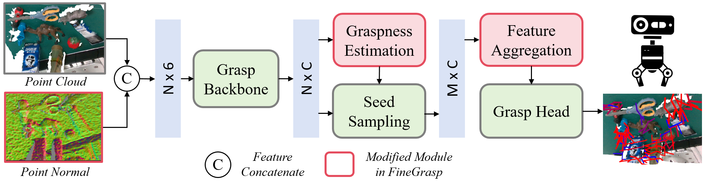
Overall framework of FineGrasp. Based on EconomicGrasp, we introduce three key improvements: (1) Instance-normalized graspness labels to better balance different objects and ensure delicate objects are not overlooked during seed sampling; (2) Multi-range feature attention module more effective aggregation of multi-scale features. (3) Normal prior as an input to guide the network in identifying the optimal grasping orientation..
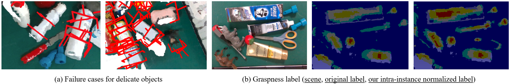
Intra-instance Normalized Graspness. Illustrating the challenges of delicate object grasping based on EconomicGrasp: (a) Two typical failure scenarios: the left image shows the model failing to generate a usable grasp pose for small objects in a cluttered scene, while the right image shows poor pose quality, leading to potential failure. (b) Issues in graspness ground truth generation: the middle image shows ground truth after cross-object normalization, where scissors are ignored. The right image shows our strategy, normalizing within each object first to ensure consistent scoring across objects.
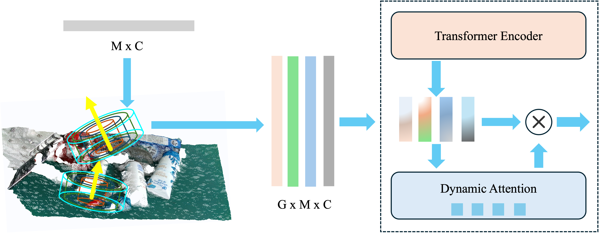
Multi Range Attention. Point features are aggregated across multiple ranges through a Transformer encoder, enabling cross-scale feature interaction. Adaptive fusion weights dynamically combine these features, facilitating grasp pose learning for varying sizes.
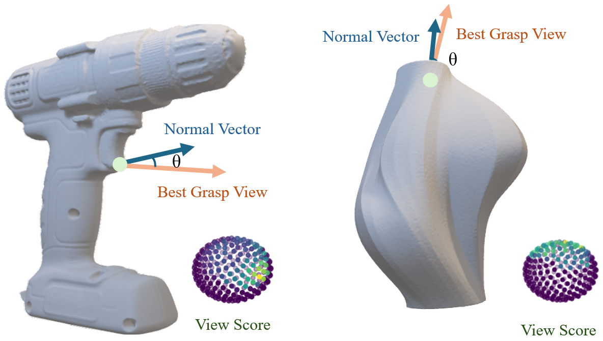
Normal Prior. The force closure score distribution in GraspNet1B exhibits a view-dependent bias, the normal vector provides a approaching prior for high-quality grasping poses regression
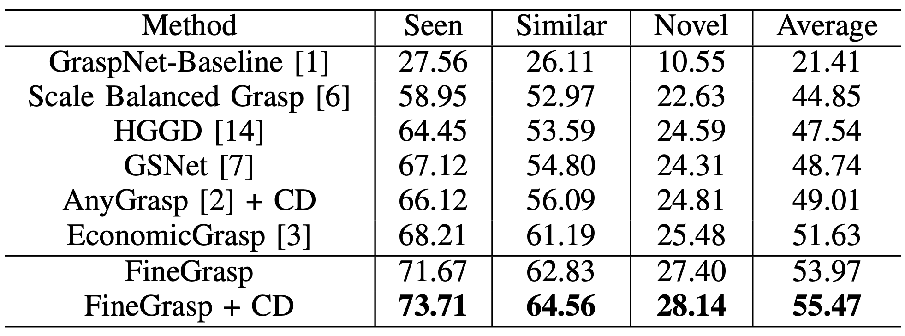
Comparison with the State-of-the-art. Experiment on GraspNet-1B dataset. Showing APs on Realsense split. CD means Collision Detection
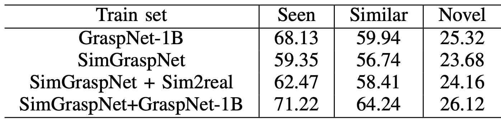
The experiment on simulation dataset.
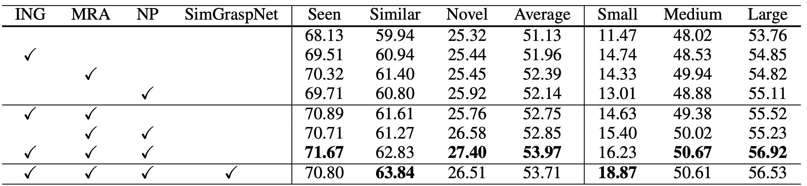
Ablation Study. The impact of components in the proposed method: NP (Normal Prior), MRA (Multi-range Attention), and ING (Instance-norm Graspness).
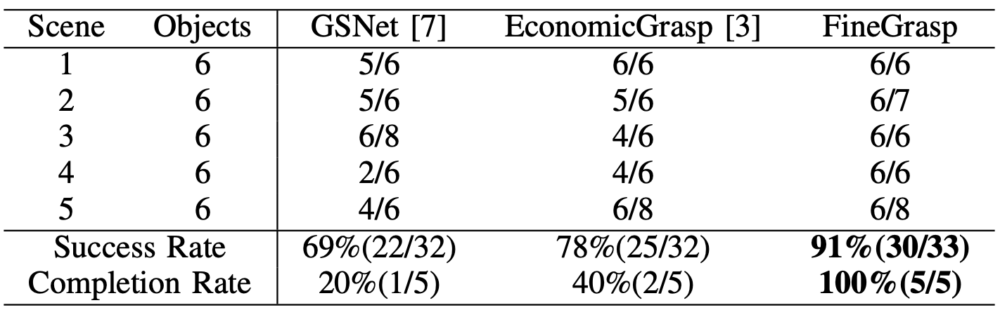
Real-world experiment on delicate objects.
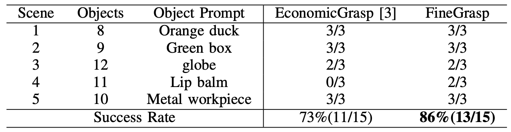
Real-world experiment on object-grounding grasp.
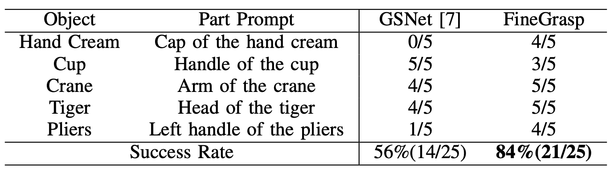
Real-world experiment on part-grounding grasp.
@misc{du2025finegrasp,
title={FineGrasp: Towards Robust Grasping for Delicate Objects},
author={Yun Du and Mengao Zhao and Tianwei Lin and Yiwei Jin and Chaodong Huang and Zhizhong Su},
year={2025},
eprint={2507.05978},
archivePrefix={arXiv},
primaryClass={cs.RO},
url={https://arxiv.org/abs/2507.05978},
}